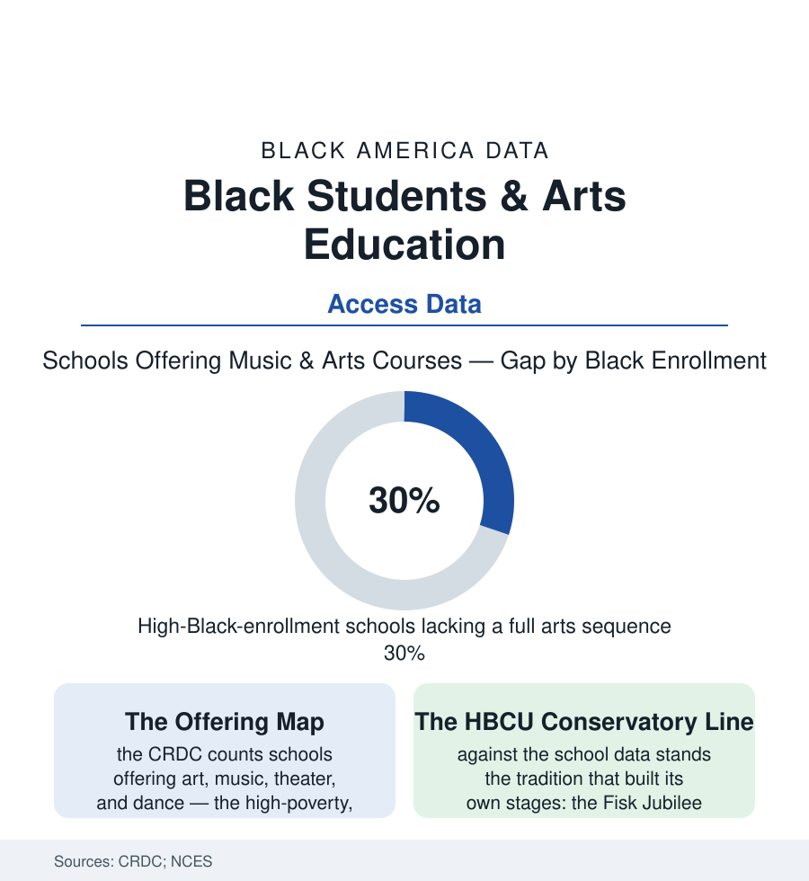

Black Education
Arts and Music Education: The First Line Cut, the Last One Restored
The Civil Rights Data Collection maps arts access school by school — and the schools serving Black students offer measurably less of the curriculum that wealthier schools treat as essential.

The arts are where the curriculum confesses its values: what a school offers when it does not have to. The Civil Rights Data Collection counts arts offerings school by school — music, visual art, dance, theater — and the map it draws needs no commentary: schools serving the most Black students offer the thinnest arts catalogs in the survey, form by form, level by level. Against that table stands a tradition in which the arts were never enrichment but engine — the jubilee singers who sang a university into solvency. This article reads both.
The Offering Data: Enrichment as a Resource
The CRDC's tables give the file its shape: nearly all schools offer something in the visual arts and music at the elementary level in the survey's generous counting — and the sequence breaks down by level and by student body (the dedicated arts teacher's presence, the ensemble and the advanced course, the theater and dance offerings thinning steeply in the high-poverty and high-Black-enrollment schools of the dataset; the instrument question inside the music row — the school band existing against the family that must rent the horn, the fee and rental data's quiet sorting of who actually plays). The budget mechanics are documented in the state reports: the arts as the discretionary line, cut first in the fiscal crisis (the 2008-09 recession's arts-teacher losses measured in the workforce data, the recovery restoring them last and least in the high-need districts), the tested-subject era's schedule compression (the elementary arts and recess minutes squeezed in the accountability decades' time-use studies — the Black child's school day measurably narrower in the untested subjects), and the grant economy's project logic (the foundation-funded residency, the teaching-artist semester — excellence as episode, against the wealthy suburb's staffed department as infrastructure). The private-lesson market prices the substitution: the household that buys back the cut curriculum at studio rates, an after-school economy whose participation data track income as faithfully as any table in this atlas.
The Tradition the Data Sit On
The offering gap reads differently against what Black education built when it controlled its own stages: the Fisk Jubilee Singers' 1871 tour — students singing the spirituals to raise the money that saved their university, the founding transaction of Black higher education being an arts tour; the Hampton and Tuskegee choirs' parallel economies; the church as the community's conservatory in every city's file in this atlas (the choir loft as the first stage, the musician's apprenticeship the organ bench provided free — the gospel tradition functioning as the arts-education system the schools did not run, its alumni the century's music); the marching band as the HBCU's public glory and the high school band room's pipeline to it (the band as the Black school's flagship extracurricular in the Southern data — staffed, funded, and traveled like the football programs of other schools' budgets, the one arts line the community's own priorities defend in the cut years); and the literary-artistic line from the Harlem Renaissance's schoolchildren to the spoken-word and step teams of the current extracurricular census. The tradition's own verdict on the offering data is written in its history: given the stage, this community's schools produced the nation's music. The CRDC counts what the stages look like now.
The Stakes Data: What the Arts Do in the Record
The research file on arts education's effects is unusually careful, and its strongest findings are about presence rather than genius: the randomized and quasi-experimental studies (the Houston arts-access experiment's measured gains in engagement, attendance-adjacent behaviors, and writing scores — among the field's most rigorous, run in a majority-Black and Latino district; the longitudinal analyses associating sustained arts coursework with graduation and college enrollment, controlling what can be controlled and saying so), the engagement mechanism (the arts course as the reason a specific child attends — the counselor literature's oldest observation, now with effect sizes), and the discipline file's mirror (the student claimed by an ensemble carrying an identity the suspension data rarely touch). The policy frontier in the current record is funding-formulaic: the arts weighted into state formulas in a handful of states, the ESSA Title funds' arts eligibility little used in the spending data, the dedicated-levy districts (the cities that voted the arts their own millage — their offering data the experiment's treatment group). The file closes where it opened: the offerings are counted, school by school, every two years by the federal government. The table is published. What a school offers when it does not have to remains the most honest line in its budget — and the CRDC has been printing it, school by school, for anyone who wants to know which children were told the arts were not for them.
Reading the Arts Data
The community that financed a university with a choir tour now sends its children to the schools with the emptiest stages in the federal survey. That is not a culture gap; it is a budget line — measured, published, and restored last on purpose or not at all. The data do not ask anyone to love music. They ask who decided the music was optional, and for whose children.
More in Black Education
Black Educational Attainment: High School Parity, the College Gap
About 89 percent of Black adults hold a high school diploma and one in four holds a bachelor's degree or higher — the attainment ladder, the college completion gap, and the generational trend.
Historically Black Colleges and Universities: Enrollment and Degrees
More than 100 HBCUs enroll roughly 290,000 students and award about one in six Black bachelor's degrees — an outsized share from a small sector. The federal education data.
Black College Enrollment: 2.4 Million Students
About 2.4 million Black students are enrolled in American colleges — nearly two-thirds of them women. The NCES enrollment data by sector, level, and trend.
Source: U.S. Department of Education Civil Rights Data Collection; National Center for Education Statistics; Arts Education Partnership and NEA research; state arts-education reports.